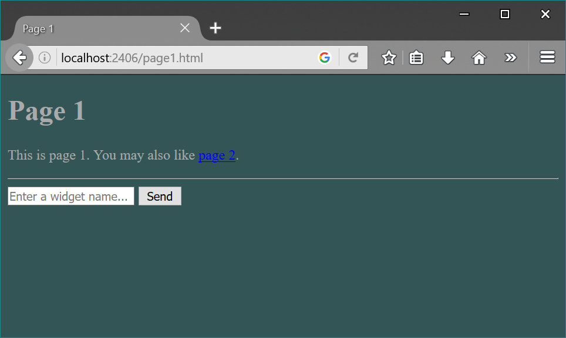
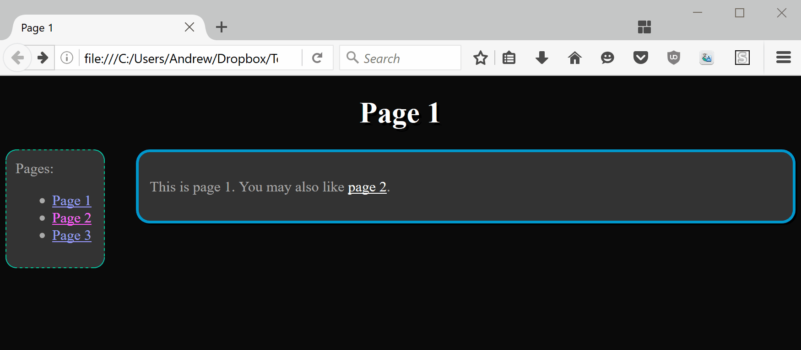
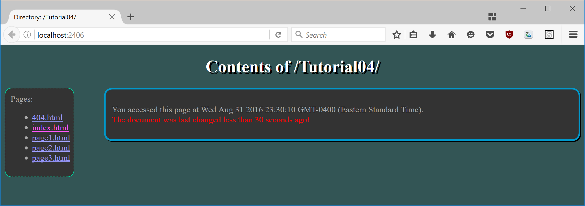

The purpose of this tutorial is to get you practice with the use of webservers, forms, and dynamic content on both the client and server side.
IMPORTANT: This tutorial is meant as a homework assignment and for you to demonstrate your results/ask for help at your tutorial session. It is likely that you will not be able to complete it if you only start when you come to the tutorial.
To get credit for the tutorial you must complete the required exercise problems provided and demonstrate your results to the tutorial TA before you leave the tutorial.
This tutorial builds on the work done in the previous tutorial. It is expected that you have completed the required problems of the previous tutorial before beginning this one. You may use your own solution, or this solution if you prefer.
Start this tutorial by copying your website from Tutorial 3 into a new folder .../Tutorial04/. Download the simpleWebServer.js code to your tutorial04 folder from the provided code on the tutorial page.
For this problem you will use the provided server to serve up the html files you created in the previous tutorial. Note, you may need to modify the server file (and use npm) to make the server work. The change(s) should be minimal, but it is part of this exercise to understand the server code well enough to make those change(s) appropriately.
Update the server to serve the 404.html page created in the previous tutorial when requests are made for non-existant pages. Hint: you can use fs.existsSync(filename) to determine if a file exists.
If you request a directory from the server of the previous problems, what happens? We learned in lecture that the standard way to fix this is to provide an index.html page to serve in place of the requested directory. Write an var stats=fs.statSync(filename) as the first step in determining this).
You may create your own index.html page or modify the one in the provided code to suit your needs. The page should be simple html file that displays the directory name, and a hardcoded list of links to the files in your website. (See the extra practice problems from the last tutorial and this one for extensions to this static file).
For this problem you will add a form element to one of your pages that is used to request data from the server. We will approach this in two parts: Part a) Server-side. Part b) Client-side. The questions below will guide you through this process uing a fictional listing of "widgets"; however, you are free to make this data/form fit the context of your webpage. It is recommended that you follow the same structure as shown initially, then extend the code to fit your own needs. Let's begin!
Ensure that you have the simpleWebServer.js up and running and it is capable of delivering your webpages (e.g. visit http://localhost:2406/yourpage.html). For this part we will add data and a route to the server so that it is prepared to handle requests for the form data.
Typically large pieces of data will be stored in a file or even better, a database, but for the purposes of this tutorial we will simply create a global object in the server's source file. The object is used as a dictionary (a list of key:value pairs) for all of the known types of widgets and their descriptions. See this link for a sample object. Place the object definition in the global space of your code so it can be accessed by the connection handler.
To create a route we first need to parse the url from the request. A request from the user for one of these widgets will look like something like: localhost:2406/widgets/description?widgetName=someWidget. We could parse the request url manually using string methods, but it will be easier to use the built-in url parsing module: var url = require('url');. Use the url module to parse the request.url into an url object (urlObj) with all its component parts. Be sure to set the queryString flag to true as we will be using the query string in this example.
A route is simply a fixed response to some specific url. In this case we want to treat requests for /widgets/description by accessing the widgetData object, and returning the appropriate description. Add an if statement to your connection handler that checks for the pathname /widgets/descrption in the request. This if statement should occur before the static server route for your normal files. Note: you cannot compare to the entire url as it contains both the pathname and the query. We are interested in just the pathname for the route, as the same route should be used for all widget requests, regardless of what widgetName is specified in the query.
In the body of the if statement, retrieve the widgetData value from the global object that matches the key given by the urlObj.query.widgetName property. Write this description as the data in the response message. The content type should be text/html.
You can test that your server route is operational by manually entering the complete url. E.g.: http://localhost:2406/widgets/description?widgetName=quimney. If successful, you should see a blank page with only the appropriate description displayed.
On the client side, select one page from your website to which we will add a very simple form. The form will allow the user to enter the name of the widget they are interested in, and submit a request to the server at the click of a button.
The form should consist of two inputs: one of type text and one of type submit. Be sure to give the text input an appropriate name attribute so that your resulting query is correctly structured (e.g. name="widgetName"). You may also wish to display a label and/or placeholder for your text input so that users understand what they are expected to do. The form requires two attributes: one for the action, that is the url to be requested, and one for the http method. Complete these appropriately so that when the submit button is clicked, the form data is sent to the server with an URL that matches the route we created in the previous part of the problem. For more details see the MDN's guide to forms.
If successful, you should be able to enter a valid widget name into the form field, click send, and be directed to that same description page you saw at the end of the last part. For extra practice (not required in order to recieve the tutorial mark), have your server generate a more interesting html page in which to display the description, and appropriately handle non-valid requests (ie, 404).
For this question you are to create a dynamically shifting page color scheme using Timers.
First, create an event handler for the window's onload event. This handler should begin your dynamic content by first initializing a style (setting the initial colour to the DOM element), and second setting a timer. The style I have chosen for the demos is the first page's background color, however you are free to choose any visible, numerically-defined, style you wish (e.g. a div's width or location, a text shadow, etc). In the load event initialize the style, (e.g. set the background to black). Then create a timeout for a semi-short duration (e.g. 1 second).
The timeout handler should do two things: 1) alter the style some small amount (e.g. lighten the background color), and set a new timer for another small interval. The handler function for this timeout should be the same as the current handler function. That is, you are creating an asychronous recursive event.
To handle the recursion your handler should check for edge cases in your style (e.g. black and white) and change directions when one is reached (e.g. lighten/darken). You will need to use global variables to accomplish the persistent change in style. To set colors via numbers it is easiest to use the rbg() style of color values.
Ensure you have the simpleWebServer.js up and running, and that requesting a directory returns the index.html page.
For this problem we will make the list of files in index.html dynamic according to what files are actually in the requested directory. Start by removing the hard-coded list of links that you made earlier (you may leave the ul tags, but get rid of the li and a tags). What follows will provide guidance on dynamically requesting a replacement list.
Add a function to your index.html page that runs when the script is reached. This script should be inside the body of your code, following the list tags. This new function should make a new XMLHttpRequest() to the server to get a list of files in the directory. You should open() the XHR message with the method "GET", and the location of the directory ("./"). You may use either the sync or async versions of this function. (Note: on your assignment you will be required to use the asynchronous version).
Note: waiting for the entire page to load could cause issues with your XHRs running into the browser cache instead of reaching your server. This is why the tutorial directs you to run the script right after the necessary elements have loaded. As an alternative, you may be interested in implementing the offcially documented hack solution rather than rely on a race condition. Feel free to use either solution here.
To enable the server to distinguish between requests for this data and the requests for the index.html page itself, this XHR should specify a header that the acceptable responses are of type application/json. To do this use xhr.setRequestHeader("accept","application/json");. Specifying the header must happen between opening the xhr and sending it.
The server should check this header before determining its response. If the request is for a directory and it will only accept application/json, then respond with a JSON object containing one property: an array of filenames. You can use the following javascript object, but remember to stringify it before adding it to the server's response: {files:fs.readdirSync(filename)}
Back on the client side, use the server's response to populate the index.html page. If you are using the asynchronous version of XHR, this should be done inside an event handler for the xhr object's "load" event. (If you are using the synchronous version of XHR this can be done following the lines that sent the request.) The request object will hold the response data in the property xhr.responseText. By parsing that into an object, we should get access to the array of files that was sent by the server.
Finally, loop through that array of files to construct an HTML string. To match the image below you will need to put each filename into its own link and list item. You can select the ul tag inside the #menu div using an appropriate query selector, and then set its innerHTML property to the string you just created.
In tutorial 3, you created an index.html page that attempted to access the last modified date of a webpage. However, when the webpage was retrieved from the server, the last modified date matched the time the file was retrieved (not when it was last changed). In order to fix this, you need to read the header "Last-Modified" that is sent with the file. For our purposes we will place a second request for the same file.
In your index.html file create a new function that contains an XMLHttpRequest as shown in lecture. You may use either the synchronous or asynchronous form for this. The request should use the HTTP "HEAD" method (in place of "GET"), as we are only interested in the headers of the file here. The requested url should be the current file (./index.html). We will discuss the response below, but first...
You will need to update the server to distinguish between "HEAD" requests and "GET" requests. The difference can be discovered by looking at the request method, and the difference in response is whether or not to include the file's contents. In order to ensure that the Last-Modified header is present in the response sent, update your server to append that header to all of the existing files it serves. You can use the following code snippet to get a file's last modified date in node after you've ensured that the file exists: lastMod = fs.statSync(filename).mtime;. Finally, you will need to include this data in the head of the server's response message using the writeHead method.
Once the XHR has been sent, processed, and a response recieved on the client side, access the response header. Using this info update your code from the last tutorial to properly show the warning message if the index.html file has been is newer than 30 seconds old. You can use the Date.parse() method to convert a date string to milliseconds. Note: the local version of your html file will no longer work using this style, the page must be retrieved from the server.